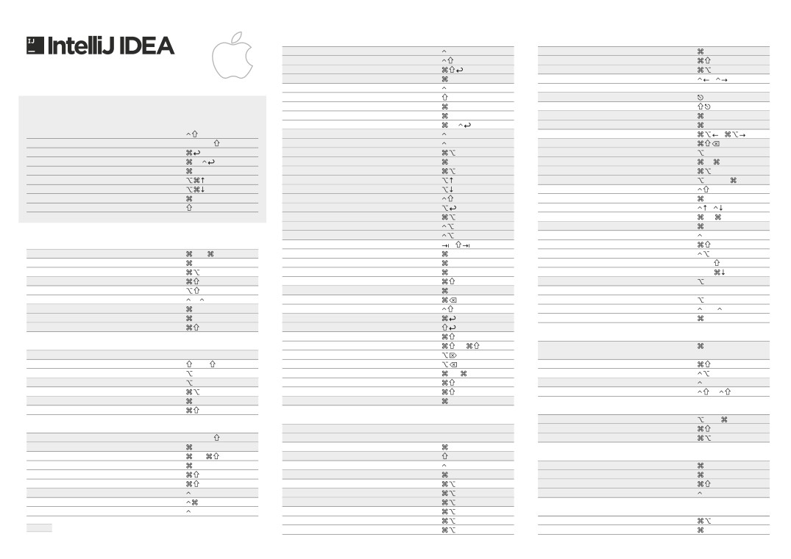

—⽣产⼒ 助推器 Translation By LarryKoo 2018-08-08
Talk is cheap, show me the code.
Editing (编辑)
Navigation (导航)
基本的代码补全
Space
查找类⽂件
O
智能代码补全
Space
查找所有类型⽂件
O
⾃动结束代码，⾏末⾃动添加分号
前往指定的变量 / ⽅法
O
macOS 快捷键映射表
显示⽅法的参数信息
P
左右切换打开的编辑tab⻚⻚
/
快速查看⽂档
J,
返回到前⼀个⼯具窗⼝
F12
查看外部⽂档
F1
从⼯具窗⼝进⼊代码⽂件窗⼝
显示代码简要信息
+ mouse
隐藏当前或最后⼀个活动的窗⼝
记住这些快捷键，将事半功倍
在错误或警告处显示具体描述信息
F1
在当前⽂件跳转到某⼀⾏的指定处 显
L
⽣成代码….
N,
示最近打开的⽂件记录列表
E
智能代码补全
Space
覆盖⽅法（重写⽗类⽅法）
O
光标跳转到当前单词左 / 右侧开头位置
/
在任何地⽅搜索
Double
实现⽅法（实现接⼝中的⽅法）
I
跳转到最后⼀个编辑的地⽅
展示建议和快速补全代码
包围代码….
T
显示当前⽂件选择⽬标弹出层
F1
⽣成代码….
N,
注释/取消注释与⾏注释
/
进⼊光标所在的⽅法/变量的接⼝或是定义处 跳转
B, Click
显示⽅法的参数信息
P
注释/取消注释与块注释
/
到接⼝实现类
B
扩展选中档次范围
连续选中代码块
快速打开光标所在⽅法、类的定义
Space, Y
缩⼩选中单词范围
减少当前选中的代码块
跳转到类型声明处
B
显示最近打开的⽂件记录列表
E
显示上下⽂信息
Q
前往当前光标所在⽅法的⽗类⽅法
U
重命名
F6
显示意向动作和快速修复代码
跳转到前⼀个 / 后⼀个⽅法
/
格式化代码
L
移动光标到代码块的开始/结束位置
] /
[
优化import导⼊
O
弹出当前Class结构定义
F12
⾃动缩进线
I
显示当前类的层次结构
H
General (通⽤)
缩进代码 / 反向缩进代码
/
显示⽅法层次结构
H
打开相应编号的⼯具窗⼝
0 ...
9
剪切当前⾏或选定的块到剪贴板复
X
显示调⽤层次结构
H
保存所有
S
制当前⾏或选定的块到剪贴板
C
跳转到下⼀个/上⼀个⾼亮错误的位置
F2 / F2
同步、刷新
Y
从剪贴板粘贴
V
编辑 / 查看代码源
F4 /
来回切换最⼤化编辑器
F12
从最近的缓冲区粘贴….
V
显示到当前⽂件的导航条
Home
检查当前⽂件与当前的配置⽂件
I
复制当前⾏或选定的块
D
选中⽂件/⽂件夹/代码⾏，添加/取消书签
F3
弹出快速设置导航对话框
§,
`
删除当前⾏或选定的块的⾏
选中⽂件/⽂件夹/代码⾏，使⽤助记符添加/取消书签
F3
打开系统设置对话框
,
智能的将代码拼接成⼀⾏
J
定位到对应数值的书签位置
0 ...
9
打开项⽬设置对话框
;
展示建议和快速补全代码
显示所有书签
F3
查找动作
A
开始新的⼀⾏
⼤⼩写切换选中的代码块
U
Compile and Run (编译和运⾏)
Debugging
(调试)
选择直到代码块结束/开始 删
] /
[
编译项⽬
F9
进⼊下⼀步
F8 / F7
除到单词的末尾
智能进⼊下⼀步 / 跳出
F7 / F8
删除到单词的开头
编译选择的⽂件、包或 module
F9
运⾏到光标处
F9
展开 / 折叠代码块
+ /
-
弹出 Run / Debug 的配置项
R / D
弹出计算表达式窗⼝
F8
展开所以代码块
+
Run / Debug
R / D
恢复程序运⾏
R
折叠所有代码块
-
从编辑器运⾏上下⽂环境配置
R,
D
切换断点
F8
关闭活动的编辑器选项卡
W
展示断点信息
F8
Usage
Search (⽤法查询)
Refactoring (重构)
在⽂件中查找⽤法 / 在类中查找⽤法
F7 / F7
Search / Replace (查询 / 替换)
复制⽂件到指定⽬录
F5
在⽂件中⾼亮显示⽤法
F7
查询任何东⻄
Double
移动⽂件到指定⽬录
F6
显示⽤法
F7
⽂件内查找
F
在⽂件上为安全删除⽂件，弹出确认框
Delete
向下查找/ 向上查找
G / G
重命名
F6
VCS
/ Local History (版本控制/本地历史记录)
⽂件内替换
R
重构选中的代码块
T
提交代码到版本控制器
K
全局查找（根据路径）
F
更改签名
F6
从版本控制器更新代码
T
全局替换（根据路径）
R
⾏内重构
N
推送提交记录到远程版本仓库
K
选择下⼀个 匹配的项
G
将选中的代码提取为⽅法
M
快速弹出版本控制器操作⾯板
V
选择所有匹配的项
G
提取变量
V
取消选择匹配的项
G
提取字段
F
Live Templates (动态代码模板)
提取常量
C
选中代码块，弹出模板选择窗⼝，应⽤动态模板
J
—⽣产⼒
助推器 Translation By LarryKoo
提取参数
P
插⼊⾃定义动态代码模板
J